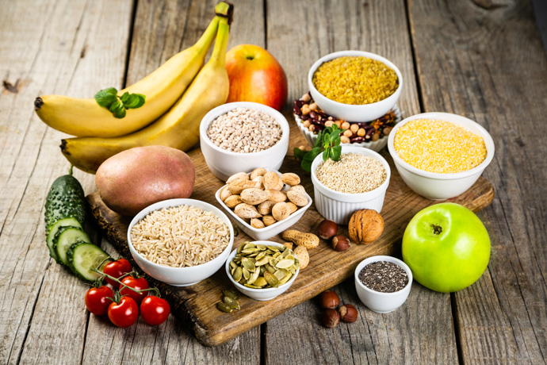

Biomoleculas:los ladrillos con los que se construye un organismo.
Carbohidratos
Son moléculas formadas por Carbono(C), Hidrogeno (H) y Oxigeno(O) y son la fuente principal de
energía, se clasifican en simples (también llamados azucares) y complejos (almidón y celulosa). De
ellos el más
conocido es la glucosa que es la principal fuente energía del ser humano. Los simples son absorbidos
de forma
inmediata y elevan la glucosa en sangre mientras que los complejos como el almidón se absorben
lentamente y por
ese motivo no elevan la glucosa en sangre, las celulosas se les conoce como fibra y ayudan a una
buena digestión.
Por estos motivos debemos consumir más complejos y muy pocos carbohidratos simples. Los encontramos
en
cereales, tubérculos, frutas, leguminosas y cosas dulces.

Las proteinas
Las proteínas son macromoléculas formadas por unidades estructurales llamadas aminoácidos.
Siempre
contienen en su estructura carbono, oxígeno, nitrógeno, hidrógeno y muchas veces también azufre.
Los aminoácidos son moléculas orgánicas compuestas por un grupo funcional amino (-NH2) en un
extremo
y un grupo funcional carboxilo (-COOH) en el otro extremo. Existen veinte aminoácidos
fundamentales,
que en distintas combinaciones, constituyen la base de las proteínas.
Las funciones de las proteinas son:
Estructural: Brindan soporte y forma a las células y tejidos, como el colágeno en el tejido
conectivo y la queratina en el pelo y uñas.
Transporte: Transportan sustancias a través del cuerpo, como la hemoglobina que transporta
oxígeno en la sangre.
Enzimática: Aceleran reacciones químicas en el cuerpo, como las enzimas digestivas que
descomponen los alimentos.
Defensa inmunitaria: Los anticuerpos son proteínas que ayudan a combatir infecciones y
enfermedades.
Regulación hormonal: Algunas proteínas actúan como hormonas, regulando procesos como el
crecimiento y el metabolismo.
Energética: Las proteínas pueden ser utilizadas como fuente de energía, aunque no es su función
principal.
Reserva: Algunas proteínas sirven como reserva de aminoácidos para el cuerpo.
Regulación genética: Las proteínas participan en la regulación de la expresión de los genes.
Homeostática: Ayudan a mantener el equilibrio interno del cuerpo, como la regulación del pH.
Motora: Permiten el movimiento, como la actina y la miosina en los músculos.
Algunos alimentos ricos en proteínas son: el garbanzo, soya, el pollo, el salmón, carne de res, el
atún, el arroz, lácteos, las espinacas, la zanahoria, almendras y nueces entre otros. Además, se
pueden encontrar diversos suplementos ricos en proteínas de origen vegetal y/o animal.